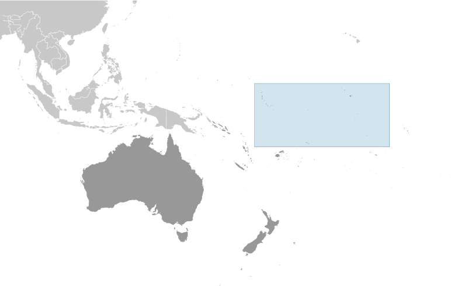

Australia-Oceania :: KIRIBATI
Introduction :: KIRIBATI
-
The Gilbert Islands became a British protectorate in 1892 and a colony in 1915; they were captured by the Japanese in the Pacific War in 1941. The islands of Makin and Tarawa were the sites of major US amphibious victories over entrenched Japanese garrisons in 1943. The Gilbert Islands were granted self-rule by the UK in 1971 and complete independence in 1979 under the new name of Kiribati. The US relinquished all claims to the sparsely inhabited Phoenix and Line Island groups in a 1979 treaty of friendship with Kiribati.
Geography :: KIRIBATI
-
Oceania, group of 33 coral atolls in the Pacific Ocean, straddling the Equator; the capital Tarawa is about halfway between Hawaii and Australia1 25 N, 173 00 EOceaniatotal: 811 sq kmland: 811 sq kmwater: 0 sq kmnote: includes three island groups - Gilbert Islands, Line Islands, and Phoenix Islands - dispersed over about 3.5 million sq km (1.35 million sq mi)country comparison to the world: 187four times the size of Washington, DC0 km1,143 kmterritorial sea: 12 nmexclusive economic zone: 200 nmtropical; marine, hot and humid, moderated by trade windsmostly low-lying coral atolls surrounded by extensive reefsmean elevation: 2 melevation extremes: lowest point: Pacific Ocean 0 mhighest point: unnamed elevation on Banaba 81 mphosphate (production discontinued in 1979), coconuts (copra), fishagricultural land: 42%arable land 2.5%; permanent crops 39.5%; permanent pasture 0%forest: 15%other: 43% (2011 est.)0 sq km (2012)consists of three achipelagos spread out over an area roughly the size of India; the eastern Line Islands and central Phoenix Islands are sparsely populated, but the western Gilbert Islands are some of the most densely settled places on earth, with the main island of South Tarawa boasting a population density similar to Tokyo or Hong Kongtyphoons can occur any time, but usually November to March; occasional tornadoes; low level of some of the islands make them sensitive to changes in sea levelheavy pollution in lagoon of south Tarawa atoll due to heavy migration mixed with traditional practices such as lagoon latrines and open-pit dumping; ground water at riskparty to: Biodiversity, Climate Change, Climate Change-Kyoto Protocol, Desertification, Hazardous Wastes, Law of the Sea, Marine Dumping, Ozone Layer Protection, Whalingsigned, but not ratified: none of the selected agreements21 of the 33 islands are inhabited; Banaba (Ocean Island) in Kiribati is one of the three great phosphate rock islands in the Pacific Ocean - the others are Makatea in French Polynesia, and Nauru; Kiribati is the only country in the world to fall into all four hemispheres (northern, southern, eastern, and western)
People and Society :: KIRIBATI
-
108,145 (July 2017 est.)country comparison to the world: 191noun: I-Kiribati (singular and plural)adjective: I-KiribatiI-Kiribati 96.2%, I-Kiribati/mixed 1.8%, Tuvaluan 0.2%, other 1.8% (2015 est.)I-Kiribati, English (official)Roman Catholic 57.3%, Kiribati Uniting Church 31.3%, Mormon 5.3%, Baha'i 2.1%, Seventh Day Adventist 1.9%, other 2.1% (2015 est.)0-14 years: 29.68% (male 16,360/female 15,734)15-24 years: 21.07% (male 11,282/female 11,503)25-54 years: 38.98% (male 20,300/female 21,860)55-64 years: 6.04% (male 2,942/female 3,590)65 years and over: 4.23% (male 1,802/female 2,772) (2017 est.)total dependency ratio: 63youth dependency ratio: 57elderly dependency ratio: 6potential support ratio: 16.6 (2015 est.)total: 24.6 yearsmale: 23.8 yearsfemale: 25.5 years (2017 est.)country comparison to the world: 1581.13% (2017 est.)country comparison to the world: 10521.2 births/1,000 population (2017 est.)country comparison to the world: 767 deaths/1,000 population (2017 est.)country comparison to the world: 130-2.9 migrant(s)/1,000 population (2017 est.)country comparison to the world: 174consists of three achipelagos spread out over an area roughly the size of India; the eastern Line Islands and central Phoenix Islands are sparsely populated, but the western Gilbert Islands are some of the most densely settled places on earth, with the main island of South Tarawa boasting a population density similar to Tokyo or Hong Kongurban population: 44.6% of total population (2017)rate of urbanization: 1.9% annual rate of change (2015-20 est.)TARAWA (capital) 46,000 (2014)at birth: 1.05 male(s)/female0-14 years: 1.04 male(s)/female15-24 years: 0.99 male(s)/female25-54 years: 0.93 male(s)/female55-64 years: 0.82 male(s)/female65 years and over: 0.65 male(s)/femaletotal population: 0.95 male(s)/female (2016 est.)23.1 yearsnote: median age at first birth among women 25-29 (2009 est.)90 deaths/100,000 live births (2015 est.)country comparison to the world: 76total: 32.1 deaths/1,000 live birthsmale: 33.3 deaths/1,000 live birthsfemale: 30.9 deaths/1,000 live births (2017 est.)country comparison to the world: 58total population: 66.5 yearsmale: 64 yearsfemale: 69.1 years (2017 est.)country comparison to the world: 1742.39 children born/woman (2017 est.)country comparison to the world: 8522.3% (2009)10.2% of GDP (2014)country comparison to the world: 240.2 physicians/1,000 population (2013)1.3 beds/1,000 population (2011)improved:urban: 87.3% of populationrural: 50.6% of populationtotal: 66.9% of populationunimproved:urban: 12.7% of populationrural: 49.4% of populationtotal: 33.1% of population (2015 est.)improved:urban: 51.2% of populationrural: 30.6% of populationtotal: 39.7% of populationunimproved:urban: 48.8% of populationrural: 69.4% of populationtotal: 60.3% of population (2015 est.)NANANA46% (2016)country comparison to the world: 914.9% (2009)country comparison to the world: 48total: 12 yearsmale: 11 yearsfemale: 12 years (2008)total: 54%male: 47.6%female: 61.8% (2010 est.)
Government :: KIRIBATI
-
conventional long form: Republic of Kiribaticonventional short form: Kiribatilocal long form: Republic of Kiribatilocal short form: Kiribatinote: pronounced keer-ree-bahssformer: Gilbert Islandsetymology: the name is the local pronounciation of "Gilberts," the former designation of the islands; originally named after explorer Thomas GILBERT, who mapped many of the islands in 1788presidential republicname: Tarawageographic coordinates: 1 21 N, 173 02 Etime difference: UTC+12 (17 hours ahead of Washington, DC, during Standard Time)note: on 1 January 1995, Kiribati proclaimed that all of its territory was in the same time zone as its Gilbert Islands group (UTC +12) even though the Phoenix Islands and the Line Islands under its jurisdiction are on the other side of the International Date Line3 geographical units: Gilbert Islands, Line Islands, Phoenix Islands; note - there are no first-order administrative divisions, but there are 6 districts (Banaba, Central Gilberts, Line Islands, Northern Gilberts, Southern Gilberts, Tarawa) and 21 island councils - one for each of the inhabited islands (Abaiang, Abemama, Aranuka, Arorae, Banaba, Beru, Butaritari, Kanton, Kiritimati, Kuria, Maiana, Makin, Marakei, Nikunau, Nonouti, Onotoa, Tabiteuea, Tabuaeran, Tamana, Tarawa, Teraina)12 July 1979 (from the UK)Independence Day, 12 July (1979)The Gilbert and Ellice Islands Order in Council 1915, The Gilbert Islands Order in Council 1975 (preindependence); latest promulgated 12 July 1979 (at independence); amended 1995, 2013 (2016)English common law supplemented by customary lawhas not submitted an ICJ jurisdiction declaration; non-party state to the ICCtcitizenship by birth: nocitizenship by descent only: at least one parent must be a native-born citizen of Kiribatidual citizenship recognized: noresidency requirement for naturalization: 7 years18 years of age; universalchief of state: President Taneti MAAMAU (since 11 March 2016); Vice President Kourabi NENEM (since 17 March 2016); note - the president is both chief of state and head of governmenthead of government: President Taneti MAAMAU (since 11 March 2016); Vice President Kourabi NENEM (since 17 March 2016)cabinet: Cabinet appointed by the president from among House of Assembly memberselections/appointments: president directly elected by simple majority popular vote following nomination of candidates from among House of Assembly members; term is 4 years (eligible for 2 additional terms); election last held on 9 March 2016 (next to be held in 2020); vice president appointed by the presidentelection results: Taneti MAAMAU elected president; percent of vote - Taneti MAAMAU 60%, Rimeta BENIAMINA (BTK) 38.6%, Taneti IOANE (BTK) 1.4%description: unicameral House of Assembly or Maneaba Ni Maungatabu (46 seats; 44 members directly elected in single- and multi-seat constituencies by absolute majority vote in two-rounds if needed; 1 member appointed by the Rabi Council of Leaders - representing Banaba Island, and 1 ex officio member - the attorney general; members serve 4-year terms)elections: legislative elections were held in two rounds - the first on 21 October 2011 and the second on 28 October 2011 (next to be held in 2015)election results: percent of vote by party - NA; seats by party - BTK 26, KTK and MKP 19, , other 2 (includes attorney general)highest court(s): High Court (consists of a chief justice and other judges as prescribed by the president); note - the High Court has jurisdiction on constitutional issuesjudge selection and term of office: chief justice appointed by the president on the advice of the cabinet in consultation with the Public Service Commission (PSC); other judges appointed by the president on the advice of the chief justice along with the PSCsubordinate courts: Court of Appeal; magistrates' courtsBoutokaan Te Koaua Party or BTK [Anote TONG]Kamaeuraoan Te I-Kiribati Party or KTK [Tetaua TAITAI]Maurin Kiribati Pati or MKP [Rimeta BENIAMINA]note: there is no tradition of formally organized political parties in Kiribati; they more closely resemble factions or interest groups because they have no party headquarters, formal platforms, or party structuresABEDA, ACP, ADB, AOSIS, C, FAO, IBRD, ICAO, ICRM, IDA, IFAD, IFC, IFRCS, ILO, IMF, IMO, IOC, ITU, ITUC (NGOs), OPCW, PIF, Sparteca, SPC, UN, UNCTAD, UNESCO, UPU, WHO, WIPO, WMOnone; the Kiribati Permanent Mission to the UN serves as the Embassy; it is headed by Makurita BAARO (since 21 May 2014); address: 800 Second Avenue, Suite 400A, New York, NY 10017; telephone: [1](212)867-3310; FAX: [1](212)867-3320note: honorary consulate in Honoluluthe US does not have an embassy in Kiribati; the US Ambassador to Fiji is accredited to Kiribatithe upper half is red with a yellow frigatebird flying over a yellow rising sun, and the lower half is blue with three horizontal wavy white stripes to represent the Pacific ocean; the white stripes represent the three island groups - the Gilbert, Line, and Phoenix Islands; the 17 rays of the sun represent the 16 Gilbert Islands and Banaba (formerly Ocean Island); the frigatebird symbolizes authority and freedomfrigatebird; national colors: red, white, blue, yellowname: "Teirake kaini Kiribati" (Stand Up, Kiribati)lyrics/music: Urium Tamuera IOTEBAnote: adopted 1979
Economy :: KIRIBATI
-
A remote country of 33 scattered coral atolls, Kiribati has few natural resources and is one of the least developed Pacific Island countries. Commercially viable phosphate deposits were exhausted by the time of independence from the United Kingdom in 1979. Earnings from fishing licenses and seafarer remittances are important sources of income, however, remittances and the number of seafarers employed declined in the global crisis, but has since improved. In 2013, fishing license revenues contributed close to half of government’s total revenue and total remittances from seafarers were equivalent to 6% of GDP.Economic development is constrained by a shortage of skilled workers, weak infrastructure, and remoteness from international markets. The public sector dominates economic activity, with ongoing capital projects in infrastructure including road rehabilitation, water and sanitation projects, and renovations to the international airport, spurring some growth. Public debt increased from less than 10% of GDP in 2014 to 23% of GDP at the end of 2015 due to the Bonriki International Airport repair and upgrade project financed by development partner concessional loans.Kiribati is dependent on foreign aid, which was estimated to have contributed over 43% in 2013 to the government’s finances. The country’s sovereign fund, the Revenue Equalization Reserve Fund (RERF), which is held offshore, had an estimated balance of $571 million (A$756 million) in 2015, equivalent to 344% of GDP. The RERF seeks to avoid exchange rate risk by holding investments in more than 20 currencies, including the Australian dollar, US dollar, the Japanese yen, and the Euro. Drawdowns from the RERF helped finance the government’s annual budget.$215 million (2016 est.)$203 million (2015 est.)$187 million (2014 est.)note: data are in 2016 dollarscountry comparison to the world: 220$174 million (2016 est.)4.2% (2016 est.)7.5% (2015 est.)0.4% (2014 est.)country comparison to the world: 89$1,900 (2016 est.)$1,900 (2015 est.)$1,800 (2014 est.)note: data are in 2016 dollarscountry comparison to the world: 211agriculture: 26.3%industry: 9.2%services: 64.5% (2012 est.)copra, breadfruit, fishfishing, handicrafts1.1% (2012 est.)country comparison to the world: 14039,000note: economically active, not including subsistence farmers (2010 est.)country comparison to the world: 199agriculture: 15%industry: 10%services: 75% (2010)30.6% (2010 est.)6.1% (2005)country comparison to the world: 204NA%lowest 10%: NA%highest 10%: NA%revenues: $197.9 millionexpenditures: $179.9 million (2013 est.)118.5% of GDP (2013 est.)country comparison to the world: 210.8% of GDP (2013 est.)country comparison to the world: 326.8% of GDP (2016 est.)23.1% of GDP (2015 est.)country comparison to the world: 170NA1.9% (2016 est.)0.6% (2015 est.)country comparison to the world: 122$NA$27 million (2016 est.)$69 million (2015 est.)country comparison to the world: 57$84.75 million (2013 est.)$62.31 million (2012 est.)country comparison to the world: 198fish, coconut productsMorocco 19.8%, Fiji 17.3%, Philippines 10.2%, US 10.1%, Vietnam 7.9%, Australia 4.2% (2016)$182.2 million (2013 est.)$172.5 million (2012 est.)country comparison to the world: 209food, machinery and equipment, miscellaneous manufactured goods, fuelAustralia 22.9%, NZ 20.9%, Fiji 14.1%, Singapore 10.5%, Japan 8.1%, China 6.9% (2016)$7.479 million (31 December 2015 est.)country comparison to the world: 175$13.6 million (2013 est.)$14.1 million (2012 est.)country comparison to the world: 200$NAAustralian dollars (AUD) per US dollar -1.3442 (2016 est.)1.3383 (2015 est.)1.3291 (2014 est.)1.1094 (2013 est.)0.9695 (2012 est.)note:: the Australian dollar circulates as legal tender
Energy :: KIRIBATI
-
population without electricity: 43,839electrification - total population: 59%electrification - urban areas: 77%electrification - rural areas: 45% (2012)24 million kWh (2015 est.)country comparison to the world: 21222.32 million kWh (2015 est.)country comparison to the world: 2120 kWh (2016 est.)country comparison to the world: 1550 kWh (2016 est.)country comparison to the world: 1668,000 kW (2015 est.)country comparison to the world: 21062.5% of total installed capacity (2015 est.)country comparison to the world: 1210% of total installed capacity (2015 est.)country comparison to the world: 1210% of total installed capacity (2015 est.)country comparison to the world: 18237.5% of total installed capacity (2015 est.)country comparison to the world: 60 bbl/day (2016 est.)country comparison to the world: 1540 bbl/day (2014 est.)country comparison to the world: 1470 bbl/day (2014 est.)country comparison to the world: 1440 bbl (1 January 2017 es)country comparison to the world: 1530 bbl/day (2014 est.)country comparison to the world: 159400 bbl/day (2015 est.)country comparison to the world: 2120 bbl/day (2014 est.)country comparison to the world: 168509.6 bbl/day (2014 est.)country comparison to the world: 2060 cu m (2013 est.)country comparison to the world: 1540 cu m (2013 est.)country comparison to the world: 1980 cu m (2013 est.)country comparison to the world: 1310 cu m (2013 est.)country comparison to the world: 1450 cu m (1 January 2014 es)country comparison to the world: 15758,450 Mt (2012 est.)country comparison to the world: 210
Communications :: KIRIBATI
-
total subscriptions: 1,000subscriptions per 100 inhabitants: 1 (July 2016 est.)country comparison to the world: 200total: 55,000subscriptions per 100 inhabitants: 51 (July 2016 est.)country comparison to the world: 211general assessment: generally good quality national and international servicedomestic: wireline service available on Tarawa and Kiritimati (Christmas Island); connections to outer islands by HF/VHF radiotelephone; recently formed Amalgamated Telecom Holdings Kiribati Limited is implementing the first phase of improvements with 3G and 4G upgrades on some islandsinternational: country code - 686; satellite earth station - 1 Intelsat (Pacific Ocean) (2016)1 TV broadcast station that provides about 1 hour of local programming Monday-Friday; multi-channel TV packages provide access to Australian and US stations; 1 government-operated radio station broadcasts on AM, FM, and shortwave (2009).kitotal: 14,649percent of population: 13.7% (July 2016 est.)country comparison to the world: 204
Transportation :: KIRIBATI
-
T3 (2016)19 (2013)country comparison to the world: 138total: 41,524 to 2,437 m: 4 (2017)total: 15914 to 1,523 m: 10under 914 m: 5 (2013)total: 670 km (2011)country comparison to the world: 1925 km (small network of canals in Line Islands) (2012)country comparison to the world: 107total: 77by type: bulk carrier 7, cargo 35, chemical tanker 6, passenger 1, passenger/cargo 1, petroleum tanker 12, refrigerated cargo 15foreign-owned: 43 (China 26, Hong Kong 2, Russia 1, Singapore 9, South Korea 1, Taiwan 2, Vietnam 2) (2010)country comparison to the world: 58major seaport(s): Betio (Tarawa Atoll), Canton Island, English Harbor
Military and Security :: KIRIBATI
-
no regular military forces (establishment prevented by the constitution); Police Force (2011)Kiribati does not have military forces; defense assistance is provided by Australia and NZ
Transnational Issues :: KIRIBATI
-
none